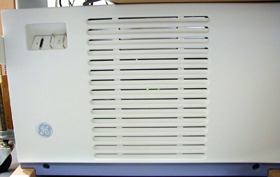
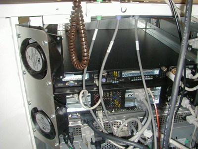
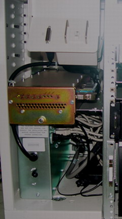
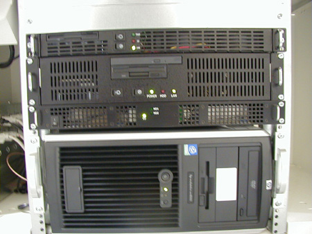
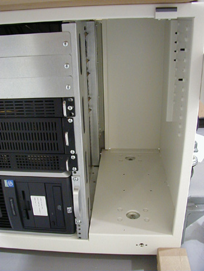
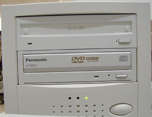

Illustration 1: Rear HP xw8200 (Computer)

| NOTE: | If the amount of dust is thick, remove this dust from screens and fans by hand. |
Vacuum the following:
Illustration 1: Rear HP xw8200 (Computer)
Illustration 2: Console Front (Computer Air Intake)

Illustration 3: Rear Fans (Console Fans)

Illustration 4: Rear Fans Back View

Illustration 5: Console Left Side (Console Interior)

Illustration 6: Front (GRE Modules)

Illustration 7: Console Right Side (Console Interior - Westville Hardware Shown)

Illustration 8: Front and Rear Vents (Console Air Intake)

Illustration 9: SCSI Tower Fan

Illustration 10: SCSI Tower Front
